15 sayfa
Allah (cc), size emanet olarak verdiği bu insanları — eşinizi, çocuklarınızı, yuvanızı — bir gün hesabını soracaktır. Peki siz onları başkalarının beğenisine mi sundunuz?
Sözlerin yetmediği yerde ezgi konuşur. Mahrem-İz'in sesli manifestosu — gizli derdin bir kilim üzerine işlenmiş hayat ağacı gibi nakşedildiği kısa bir şarkı.
Influencer ebeveynliğin fıkhî denetimi — projenin temel sorusunu iki dakikada cevaplayan kısa film.
Yapay zekâ çağında mahremiyet sınırları nereden başlar? Klasik fıkhın tasvîr, hifz-i ırz ve iftirâ kategorileri, deepfake teknolojisinin gerçeklikle hakikat arasında açtığı yarıkla yüzleşiyor — projenin sûret mahremiyeti incelemesinin sinematik anlatımı.
Ebeveynlerin, çocuklarına ait fotoğraf ve videoları sosyal medyada paylaşmadan önce çocuklarının iznini hiçbir zaman almadığı görülmektedir.
Bir çocuk, henüz konuşmayı öğrenmeden binlerce kişinin hafızasına işlenmiş olabilir.
Bir Avrupalı çocuk 18 yaşına geldiğinde, ailesi tarafından internette ortalama 1.300'den fazla fotoğrafının paylaşılmış olduğu tahmin edilmektedir.
Bu fotoğrafların nerede, nasıl kullanıldığından kimsenin haberi yok.
Dijital istismar vakalarının önemli bir kısmında ilk görüntülerin aile üyeleri tarafından kamuya açık platformlarda paylaşıldığı tespit edilmektedir.
Tehdit bazen dışarıdan değil, sevginin içinden gelir.
İslam geleneğinde "nazar" yalnızca mitolojik bir inanç değildir; insanın başkasının nimetine duyduğu gizli ya da açık haset duygusunun bir yansımasıdır.
"Nazar haktır." — Muhammed el-Buhârî, el-Câmiu's-Sahîh, Kitâbu't-Tıb, 36
Sosyal medya çağında bu tehlikeyi yeni bir boyuta taşıdık: Artık nazarın hedefi onbinlerce yabancının ekranında dönen mutlu aile fotoğraflarıdır.
Teolojik Analizi Oku →Modern sosyal medya ekonomisi, duyguları içeriğe, içerikleri reklama dönüştürür. Çocuğunuzun doğum günü pastası, yıllık izninizin sahil fotoğrafı…
Siz mutluluğunuzu paylaşıyorsunuz. Platform onu satıyor.
Bu döngüde aile mahremiyeti bir kayıp olarak değil, "içerik üretme fırsatı olarak kaçırılan bir an" olarak görülmeye başlanmıştır.
Makaleyi Oku →Mahremiyet bir yasak değil, bir kaledir. İçinde gerçek sıcaklığın korunduğu, yabancı gözlerden uzak, nefes alabilen bir yuvadır.
Mahrem-İz, bu kaleyi nasıl kuracağınızı pratik araçlar, ilahiyat perspektifinden etik rehberler ve bir aile sözleşmesiyle anlatır.
Çünkü teknolojiyi terk etmek değil, ona hâkim olmak gerekir.
Dijital Aile Rehberine Git →İlahiyat öğrencilerinin kaleminden; çağın sorularına geleneğin ışığıyla verilen cevaplar.
"İnsanların gizliliklerini araştırmayın." — Kur'ân-ı Kerîm, Hucurât Sûresi, 49:12
Fıkıh geleneğinde "" — yani hane mahremiyeti — bireyin ve ailenin korunmasını garanti altına alan temel değerlerden biridir. Kur'ân-ı Kerîm, izinsiz ev aramayı yasaklamış (Nûr Sûresi, 24:27-28), Hz. Peygamber (sav) başkasının sırrını ifşa etmeyi ve insanları gözetlemeyi kesinlikle men etmiştir.
Peki bu ilkeler, dijital dünyanın şeffaf ekranlarında nasıl hayat bulur?
Günümüzde "haneye tecavüz" artık kapıdan değil, ekrandan gerçekleşmektedir. Birinin çocuğunun fotoğrafını paylaşmak, ailesinin özel anlarını "etiketlemek", izinsiz konum paylaşımı yapmak — bunların tamamı klasik fıkhın "" yasağı kapsamında değerlendirilebilir.
Modern fıkıh âlimleri, bu meselelere dair fetvalar üretmeye devam etmektedir. Mahrem-İz, bu tartışmayı gençlere ve ailelere taşımayı hedefler.
"Her nimetin bir hakkı vardır; mahremiyetin hakkı ise onu korumaktır."
Klasik İslâm hukuku perspektifinden "Influencer Ebeveynlik" fenomeninin etik ve fıkhî denetimi. Aşağı kaydırın — her bölüm, klasik fakîhlerin sözüyle açılır.
"Veliler, üzerindeki tasarruflarında en aslah olanı yaparlar." — İbn Nüceym, el-Eşbâh ve'n-Nezâir
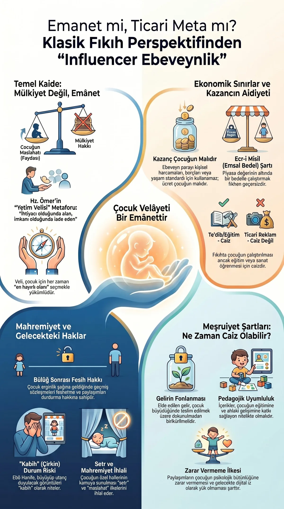
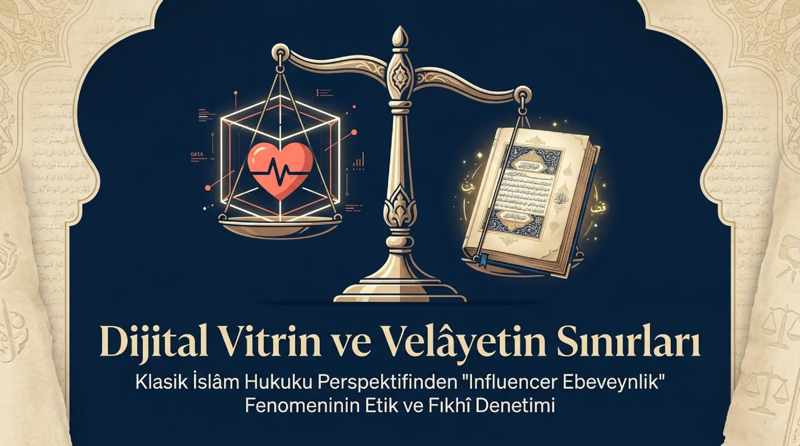
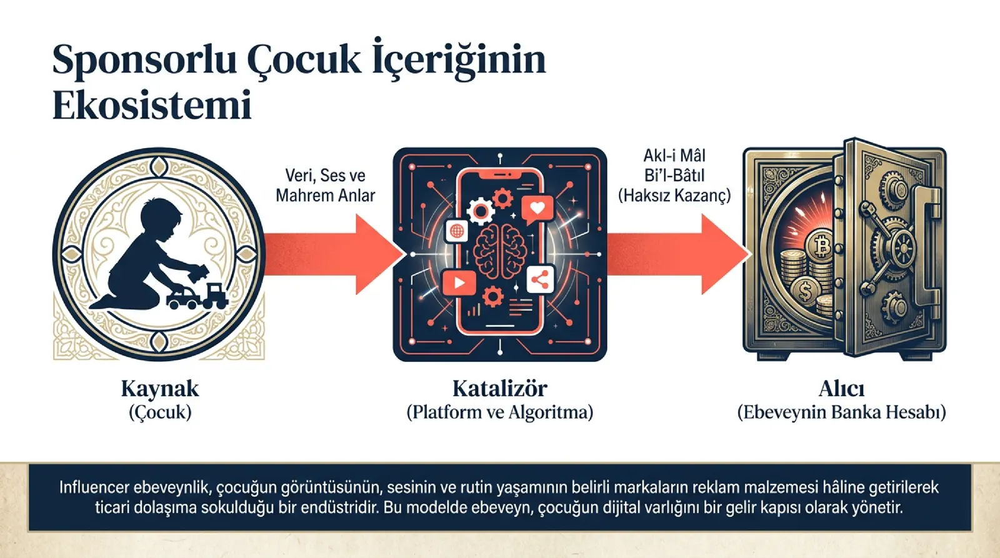
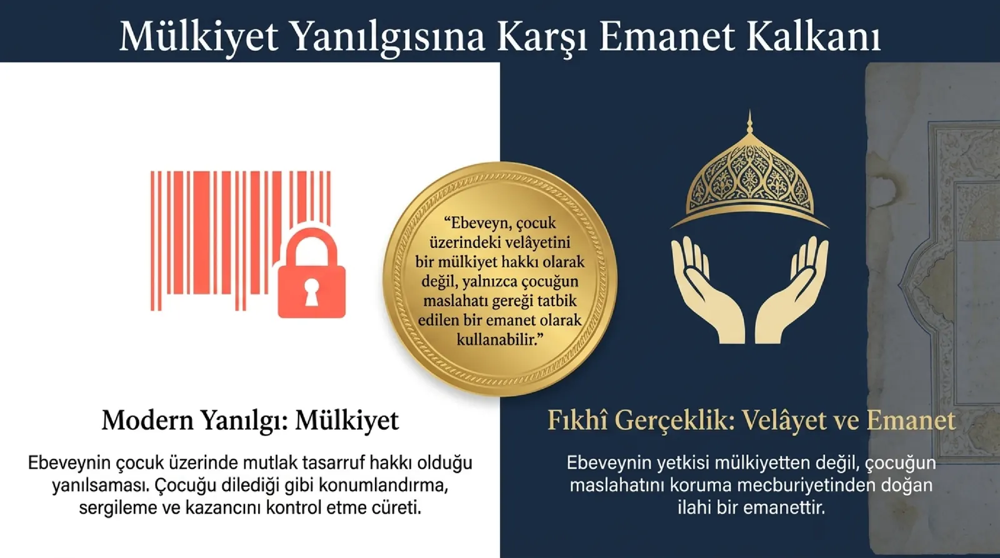
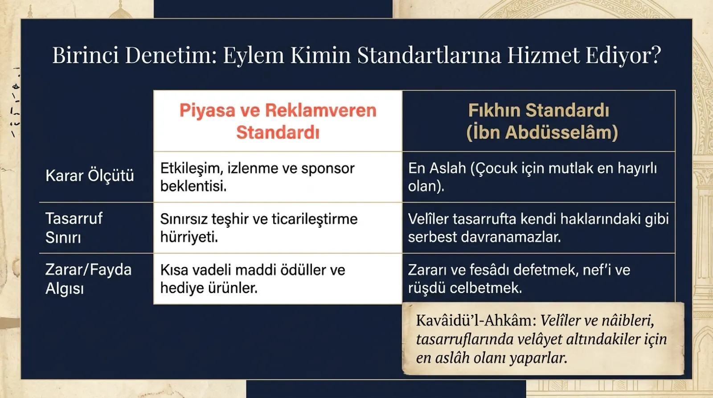
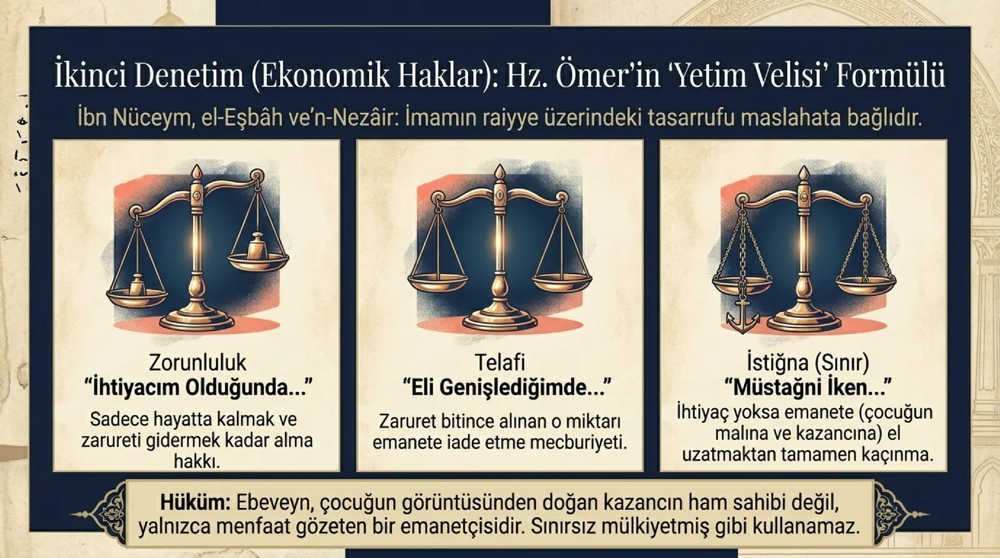
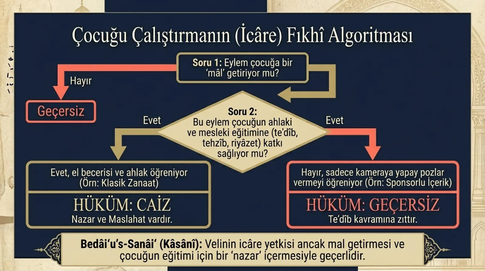
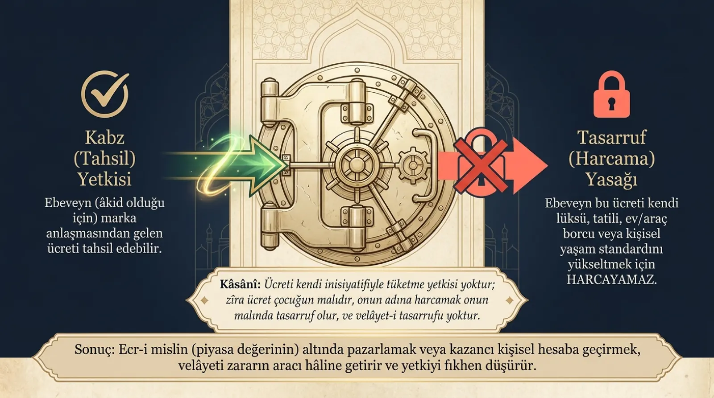
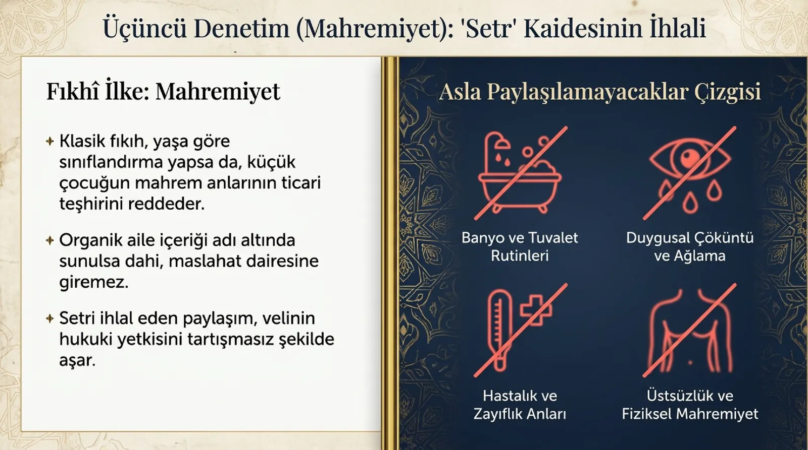
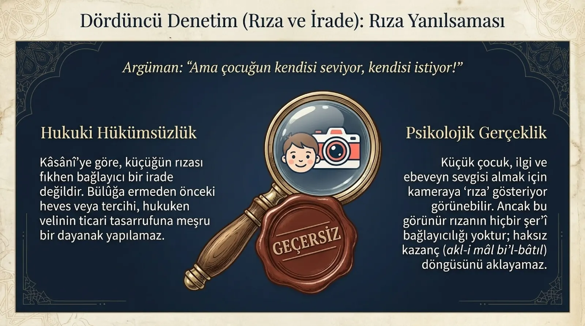
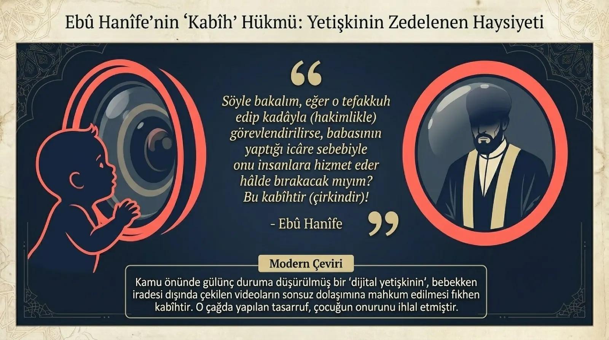
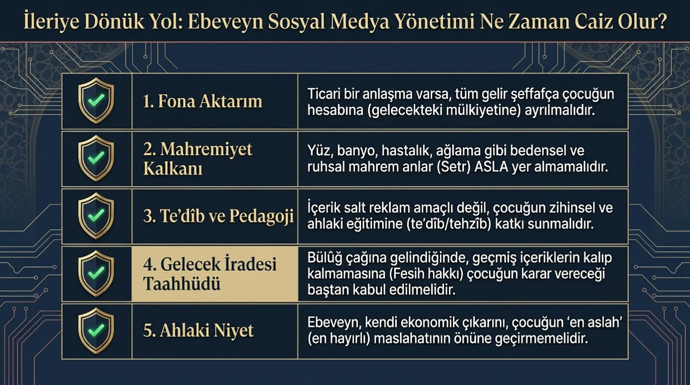
Klasik İslâm hukuku, "influencer ebeveynlik" fenomenini emanet, velâyet ve maslahat kavramları ışığında nasıl denetler? Bu sinematik anlatı, dört aşamalı bir denetimin haritasıdır.
Sinematik özetin arkasındaki üç tam akademik metin: fıkhî denetim, projenin master sunumu ve deepfake'in sûret mahremiyeti açısından fıkhî incelemesi.
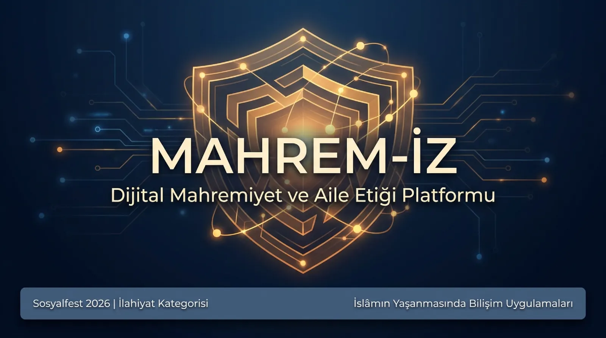
18 sayfa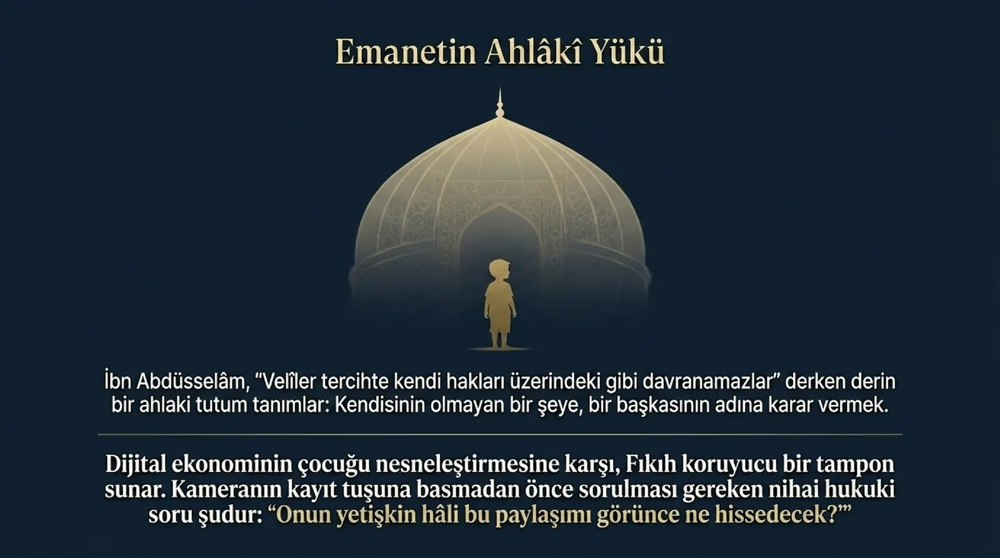
18 sayfaTakip ettiğiniz hesaplar sizi şekillendiriyor. Peki onlar bu sorumluluğun farkında mı?
Mahrem-İz Etik Karne, bir hesabı "iyi" ya da "kötü" diye damgalamaz. Bunun yerine size bilinçli bir bakış açısı kazandırmayı hedefler: Takip ettiğiniz hesapların hangi değerleri temsil ettiğini sorgulamanız için bir çerçeve sunar.
"Çünkü dikkatiniz bir oy gibidir: Nereye verirseniz, orayı büyütürsünüz."
Hesap, çocukları içeriğin merkezine koyuyor mu? Ağlama, hastalık veya mahcubiyet anları paylaşılıyor mu? Bir çocuğun rızası olmadan kamuoyuna sunulması, onun dijital kimliği üzerindeki en temel hakkını ihlal eder.
Ücretli iş birlikleri ve sponsorlu içerikler açıkça belirtiliyor mu? Bir influencer, reklamı içerik gibi sunduğunda yalnızca yasaları değil, güveni de çiğner.
Eş kavgaları, çocuk isyanları veya aile krizleri "eğlenceli içerik" olarak sunuluyor mu? Aile içi gerilimlerin izleyici kazanmak için sergilenmesi, mahremiyetin en derin biçimde ihlalidir.
Hesabın içerikleri size "yeterli olmadığınızı" hissettiriyor mu? Gösteriş içerikli paylaşımlar, sosyal medyanın ruhsal hasarlarından biri olan kıskançlığı sistematik olarak üretir.
Hesap, çocukların ve izleyicilerin ekran başında geçireceği zamanı artırmayı hedefleyen içerikler üretiyor mu? Gerçek hayat bağlarını güçlendiriyor mu, yoksa koparıyor mu?
Dini ya da geleneksel değerler, yalnızca içerik üretmek veya ürün satmak amacıyla kullanılıyor mu? Bu davranış hem dini değerlere hem de izleyiciye zarar verir.
Hesap bir hata yaptığında eleştiriye nasıl tepki veriyor? Özür dilerken bile içerik üretmek, hesap verebilirliğin değil gösterinin bir biçimidir.
Kriterleri değerlendirin, sonuç burada görünecek.
Bir sayfayı birlikte imzalayın. Bir ömrü birlikte koruyun.
Bu sözleşme, bir yasak listesi değil; ailenizin birlikte oluşturduğu ve sahiplendiği bir sözdür. Her madde, sohbet başlatmak, değerleri paylaşmak ve dijital dünyada bilinçli bir duruş sergilemek için tasarlanmıştır.
Aşağıdaki maddeleri ailenizle birlikte okuyun, tartışın ve gerekirse kendi değerlerinize göre uyarlayın. İmzalamak bir ritüeldir: "Biz bu değerlere sahibiz" demenin en güzel yolu.
"Yemek masası bir tapınaktır; orada ekran değil, sohbet hüküm sürer."
Yemek zamanları telefonsuz geçirilir. Masada her sesin değeri vardır; hiçbir bildirim, bir aile ferdinin sözünden önce gelemez.
"Fotoğraflamadan önce sor; paylaşmadan önce düşün."
Çocuğumuzu sosyal medyada paylaşmadan önce, bu paylaşımın onun yararına mı yoksa zararına mı olabileceğini tartarız. Büyüdükçe, söz hakkını ona devrederiz.
"Yuvanın duvarları, duvarların ötesine geçmez."
Aile içinde yaşanan anlaşmazlıklar, krizler ve duygusal anlar sosyal medyaya taşınmaz. Çözüm kapıların ardında aranır, izleyici kalabalığında değil.
"Dijital komşumuzu seçerken aynı titizliği gösteririz."
Hangi hesapları takip ettiğimizi, hangi içeriklere zaman ayırdığımızı birlikte gözden geçiririz. Değerlerimizle çelişen içerikleri hayatımızdan çıkarmaktan çekinmeyiz.
"Gece, yalnızca aile içindir; bildirimler bekleyebilir."
Uyumadan en az bir saat önce telefon ve ekranlar kapatılır. Gece vakti dijital değil, ruhi bir zaman dilimidir.
"Bu paylaşım kime hizmet ediyor?"
Her paylaşımdan önce şunu sorarız: Bu içerik gerçekten başkasına faydalı mı, yoksa yalnızca onay ve beğeni için mi? Cevabımız ikincisi ise, paylaşmayı erteleriz.
"Ceza değil; diyalog seçeriz."
Bu sözleşmeye aykırı davranan aile üyesine kızmaz, suçlamayız. Neden böyle hissettiğini, neye ihtiyaç duyduğunu dinler; birlikte yeniden yola çıkarız.
Bir gün, bir anne bebeğinin ilk adımlarını attığı anı kayda aldı.
Sonra o videoyu paylaştı.
Sonra video viral oldu.
Sonra o bebek, hiç tanımadığı milyonlarca insanın hafızasında yaşamaya başladı — kendi hafızası daha oluşmadan.
Biz, ilahiyat okuyan gençleriz. Kütüphanelerde geçen yıllarımızın bize öğrettiği şey şu: İslam medeniyeti, insanın mahremiyetini yalnızca bir hukuk meselesi olarak değil, bir onur meselesi olarak ele almıştır.
Biz, sosyal medyayı kullanıyoruz. Onu reddetmiyoruz. Onu anlıyoruz. Ve tam da bu yüzden, onun neyi yuttuğunu görüyoruz: Sessiz sabah kahvaltılarını, çocukların masum kahkahalarını, eşler arasındaki o sözsüz anları. Bunlar artık "içerik" oldu.
Biz, bu çağda bir şeyin kaybolduğunu fark ettik: Sadece mahremiyet değil — huzur.
İnsanlar mutluluklarını paylaştıkça, o mutluluğun içinde olmak için zaman bırakmıyorlar. Anı yaşamıyorlar, anı yönetiyorlar.
Sosyal medyayı kapatmanızı söylemiyoruz. Telefonu denize atmanızı istemiyoruz. Çocuklarınızın fotoğrafını sonsuza dek çekmemenizi emretmiyoruz.
Bir şey istiyoruz: Durun. Düşünün. Seçin.
Aileler, emanettir. İslam'da aile bir sığınak, bir koruma alanı, bir rahmet mekânıdır. Eşler birbirinin "libâsı"dır (Bakara Sûresi, 2:187) — yani örtüsü, kalkanı, sırdaşı.
Mahrem-İz, bu farkındalık için doğdu. Akademik analizler sunuyoruz. Pratik araçlar üretiyoruz. Aileler için sözleşmeler tasarlıyoruz. Ama hepsinin altında tek bir çağrı var:
Bu manifesto, geleceğin nesillerine bırakacağımız dijital mirasın sorumluluğuyla kaleme alınmıştır.
Mahrem-İz Ekibi — İlahiyat Öğrencileri, 2026
Bir sınıftan çıkmış bir fikir; bir fikirden doğmuş bir hareket.
Mahrem-İz, İlahiyat Fakültesi öğrencilerinin kaleme aldığı akademik sorulardan filizlendi.
Önce bir tartışmaydı: "Sosyal medyada mahrem olan nedir? İslam, dijital gizliliğe ne der? Bir çocuğun paylaşılan fotoğrafı, onun hakkına tecavüz müdür?"
Sonra bu tartışma bir projeye dönüştü. Proje bir platforma. Platform bir harekete.
Biz; fıkıh kitaplarını okurken aynı zamanda TikTok'u, Instagram'ı ve algoritmayı takip eden gençleriz. Gelenekle modernite arasında sıkışmış değil, her ikisini de anlayarak köprü kurmaya çalışan insanlarız.
Her iddiamızın arkasında kaynak, ayet, hadis veya bilimsel araştırma vardır.
Kimseyi suçlamaz, yargılamayız. Her insan değişebilir; biz bu değişime zemin hazırlarız.
Yalnızca teorik çerçeve sunmaz, hayata geçirilebilir araçlar üretiriz.
Söylediklerimizin önce kendimize uygulanması gerektiğine inanırız.
"Bir kişiyi iyiliğe yönlendirmen, sana üzerine güneşin doğduğu her şeyden daha hayırlıdır." — Taberânî, el-Mu'cemü'l-Kebîr
Mahremiyet bir bireyin meselesi değildir. Bir toplumun, bir neslin, bir medeniyetin meselesidir.
📧 mahremiz@sosyalfest.org
📍 İlahiyat Fakültesi — Sosyalfest 2026
İddialarımızın arkasında her zaman bir kaynak vardır. Şeffaflık, mahremiyetin ilk adımıdır.
Bu site akademik bir proje kapsamında üretilmiştir. İstatistikler en güncel erişilebilir kaynakları temsil etmekte olup her zaman birden fazla kaynakla doğrulanmaya çalışılmaktadır.
Bir kişiye, kendi adına değil başkasının yararına kullanması için verilen yetki, mal veya sorumluluk. İslam'da çocuk üzerindeki velâyet "mülk" değil emanet olarak okunur.
Kaynak: Râgıb el-Isfahânî, el-Müfredât; Kur'ân, Nisâ 4:58.Çocuk veya küçük üzerinde tasarruf yetkisi. Klasik fıkıhta velâyet çocuğun maslahatına bağlıdır; veli kendi çıkarı için bu yetkiyi kullanamaz.
İbn Abdüsselâm: "Veliler raiyye üzerindeki tasarruflarında en aslah olanı yaparlar."
Şer'î hükümlerin nihai gözettiği fayda ve yarar. Velâyet yetkisi yalnızca çocuğun maslahatı çerçevesinde meşrudur; veli kendi çıkarına aykırı tasarrufta bulunamaz.
Bir kişinin emeğinin veya hizmetinin belirli bir ücret karşılığında kiralanması akdi. Çocuğun emeğinin ticari içerik üretiminde "kiralanması", klasik icâre hükümleriyle test edilebilir.
Kâsânî, Bedâiu's-Sanâî: "Velinin icâre yetkisi ancak mâl getirmesi ve çocuk eğitimi için bir 'nazar' içermesiyle geçerlidir."Mahremiyetin örtülmesi ilkesi. Yalnızca bedensel mahremiyeti değil; hastalık, ağlama, çöküntü gibi duygusal mahrem anları da kapsar. Setrin ihlali, velâyet yetkisini fıkhen tartışmalı hâle getirir.
Hem akıl hem din nazarında çirkin sayılan davranış. Ebû Hanîfe terminolojisinde önemli yer tutar.
Ebû Hanîfe: "Eğer çocuk büyüyüp tefakkuh edip kadılığa atanırsa, babasının yaptığı icâre sebebiyle onu insanlara hizmet eder hâlde bırakmak — bu kabîhtir."
Evin ve hanenin dokunulmazlığı. Klasik fıkıhta izinsiz ev araması, bilgi sızdırma ve hane sırlarının ifşası kesin olarak yasaktır.
Dayanak: Kur'ân, Nûr Sûresi 24:27-28.Korunması zorunlu mahrem alana izinsiz girmek. Klasik fıkıhta haneye fiziksel olarak girmenin haram kılınmış hâli; günümüzde dijital ortamda paylaşım, etiketleme, konum ifşası gibi davranışları da kapsayacak şekilde tartışılmaktadır.
İslam hukukunun nihai amaçları: din, can, akıl, nesil ve malın korunması. Bir eylem niyet itibariyle iyi olsa bile sonuçları bu beş gayeden birini zedeliyorsa şer'an caiz olmaz.
Şâtıbî, el-Muvâfakât; Gazâlî, el-Mustasfâ.Bir velinin yönetimi ve sorumluluğu altında bulunan kimseler — "çoban-sürü" metaforunda sürü tarafı. Hadiste: "Hepiniz çobansınız ve hepiniz raiyyenizden mesulsünüz."
Buhârî, el-Câmiu's-Sahîh, Ahkâm 1.